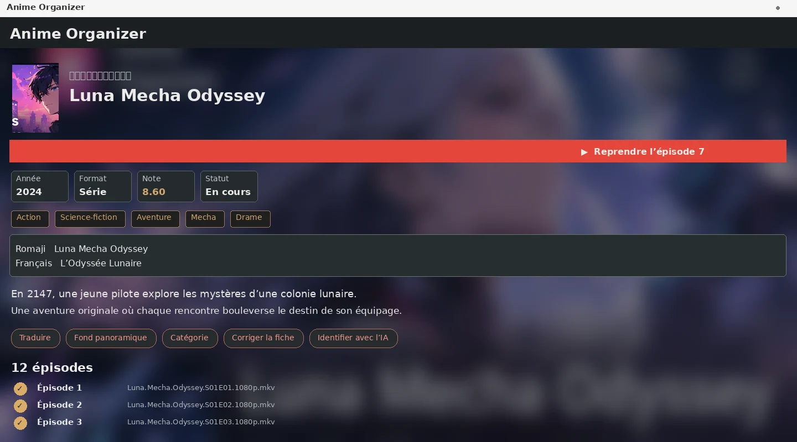
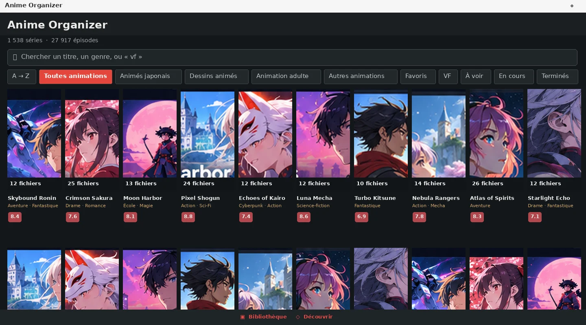
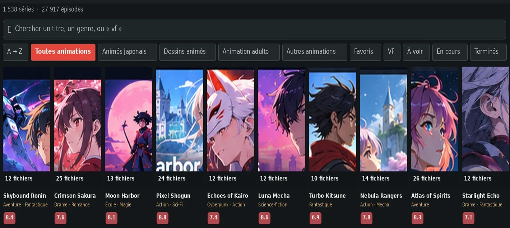
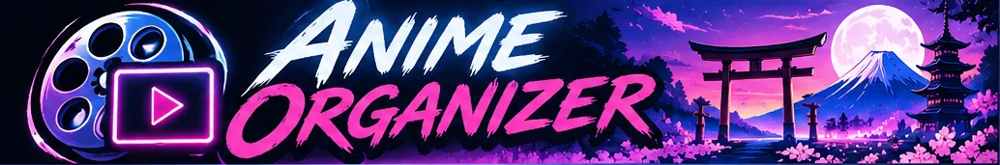

Bibliothèque intelligente
Analyse des dossiers, classement par série et saison, catégories pour les animés japonais comme les dessins animés occidentaux.
Donne une autre dimension à tes animés et séries : panoramas immersifs, lecture vidéo, captures instantanées et ambiances sonores créées à partir de tes propres épisodes.
Tes fichiers restent chez toi. Leur présentation devient unique.
Gratuit · Installation Windows ou APK Android · Application indépendante

Anime Organizer rassemble tes fichiers d'animation dans une interface pensée pour naviguer, retrouver et personnaliser chaque œuvre.
Analyse des dossiers, classement par série et saison, catégories pour les animés japonais comme les dessins animés occidentaux.
Affiches, descriptions, panoramas personnels ou issus des métadonnées, cadrage ajustable et diaporama de tes captures.
Lecteur vidéo intégré, reprise de progression, sous-titres, pistes audio et navigation entre les épisodes.
Capture une scène de tes vidéos avec F2 ou utilise F3 pour en faire immédiatement le panorama de la fiche.
Marque le début et la fin d'un passage avec F4 deux fois. Extraits MP3 organisés par animé, avec nommage automatique.
Recherche de titres OP/ED dans le catalogue AnimeThemes. L'importation audio personnelle reste disponible.
Tu choisis les passages qui représentent le mieux une œuvre. Un portrait marquant, un panorama, un dialogue culte ou un générique : à toi de composer sa fiche.
F2/F3/F4 : fonctions du lecteur Windows. L'extraction ne modifie jamais les épisodes d'origine.

Bibliothèque d'affiches, fiches détaillées et navigation par catégories. Ces aperçus historiques donnent une idée de l'interface, tandis que la liste des fonctions ci-dessus reflète les versions récentes.


Générique, réplique mémorable ou musique personnelle : compose une bibliothèque sonore par animé. Choisis un extrait, renomme-le et décide comment les sons se succèdent.
Lecture fixe, successive ou aléatoire, réglage du volume, boucle et arrêt de l'ambiance quand l'épisode commence.
La recherche AnimeThemes renseigne les génériques disponibles dans son catalogue. Elle n'effectue pas de téléchargement automatique d'œuvres protégées.

Présentation illustrative · aucun lecteur audio ni extrait tiers chargé sur ce site.
Les boutons mènent directement aux fichiers de la dernière publication sur GitHub Releases, sans page d'aperçu intermédiaire.
Emporte ta collection sur un téléphone ou une tablette Android compatible.
↓ Télécharger l'APKL'assistant d'installation Windows avec l'univers visuel Anime Neon Library.
↓ Télécharger l'EXEPas d'assistant d'installation : décompresse tous les fichiers dans un dossier avant de lancer l'application.
↓ Télécharger le ZIPChoisis l'APK Android, l'EXE Windows ou le ZIP portable dans GitHub Releases.
L'application parcourt tes fichiers vidéo et tente d'identifier séries et épisodes.
Affiches, panorama, extraits F4 et reprise de lecture : organise ta bibliothèque à ton image.
Oui, Anime Organizer est distribuée gratuitement depuis son dépôt GitHub.
Non. Le site ne fournit aucun épisode : il présente un gestionnaire de tes fichiers personnels.
Les fichiers vidéo restent sur tes appareils. Les recherches d'informations et de génériques peuvent contacter des catalogues externes avec les titres demandés.
Sur Windows, un premier appui marque le début d'un extrait audio dans un épisode local, et le second marque sa fin. FFmpeg crée un fichier MP3 séparé.
Les anciens aperçus sont des reconstitutions de l'interface, signalées comme telles. Ils seront remplacés par des captures de la version actuelle lorsqu'elles seront disponibles.
La page de la dernière GitHub Release contient le fichier SHA256SUMS.txt lorsqu'il a été publié. Les exécutables peuvent rester non signés et les contrôles antivirus indisponibles selon le runner.